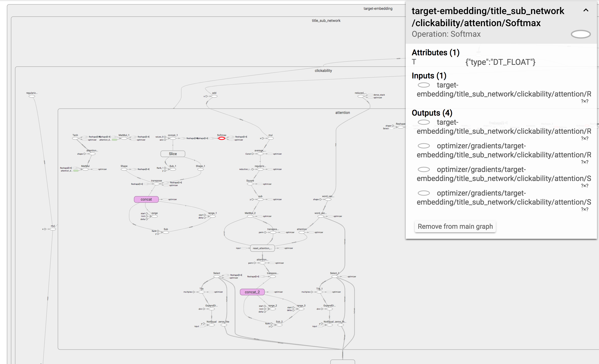

So you’ve finished training your model, and it’s time to get some insights as to what it has learned. You decide which tensor should be interesting, and go look for it in your code — to find out what its name is. Then it hits you — you forgot to give it a name. You also forgot to wrap the logical code block with a named scope. It means you’ll have a hard time getting a reference to the tensor. It holds for python scripts as well as TensorBoard:

Can you see that small red circle lost in the sea of tensors? Finding it is hard...
That’s a bummer! It would have been much better if it looked more like this:

That’s more like it! Each set of tensors which form a logical unit is wrapped inside a named scope.
Why can’t the graph be automatically constructed in a way that resembles your code? I mean, most chances are you didn’t construct the model using a single function, did you? Your code base contains multiple functions — each forms a logical unit which deserves its own named scope!
Let’s say you have a tensor x which was defined by the function f, which in
turn was called by g. It means that while you were writing the code, you had
this logical structure in mind: g -> f -> x. Wouldn’t it be great if the
model would automatically be constructed in a way that the name of the tensor
would be g/f/x?
Come to think of it, it’s pretty simple to do. All you have to do is go over all your functions and add a single line of code:
def f():
with tensorflow.name_scope(‘f’):
# define tensors
So what’s wrong with that approach?
- The name of the function
fappears twice — both in the function declaration and as an argument totensorflow.name_scope. Maybe next week you’ll change the name of the function to something more meaningful, let’s sayfoo. Unfortunately, you might forget to update the name of the scope! - You have to apply indentation to the entire body of
f. While it’s not that bad, personally I don’t like having high indentation levels. Let’s sayfcontains a for loop which contains an if statement, which contains another for loop. Thanks to calling totensorflow.name_scope, we’re already at an indentation level of 4!
We can bypass these disadvantages using simple metaprogramming — Python’s decorators to the rescue!
import re
def name_scope(f):
def func(*args, **kwargs):
name = f.__name__[re.search(r’[^_]’, f.__name__).start():]
with tensorflow.name_scope(name):
return f(*args, **kwargs)
return func
@name_scope
def foo():
# define tensors
How does it work? The @ is a syntactic sugar. It’s equivalent to the
following:
def foo():
# define tensors
foo = name_scope(foo)
name_scope gets a function as an argument (f) and returns a new function
(func). func creates a named scope, and then calls f.
The result? All the tensors that are defined by f will be created inside a
named scope. The name of the scope will be the name of the original function
(“foo”) — thanks to f.__name__.
One small problem is that while function names might start with “_”, tensorflow
scope names can’t. This is why we have to use re.
Why is it that important?

The challenge of writing clean tensorflow code is negligible compared to the research challenge of actually making the model any good.
Thus, it’s easy to be tempted to just focus on the research aspects of your job. However, in the long run, it’s important not to neglect the maintainability and readability of your code, including those of your graph.
The decorator approach make my job a little easier, and I hope you’ll benefit from it too. Do you have other tips you’d like to share? Drop a line in the comments!
Originally published by me at engineering.taboola.com.
Comments !